F1: Littleworth Common,
Burnham
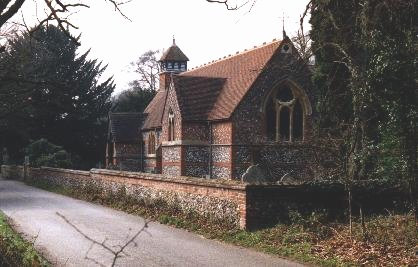
THE
AVENGERS: The Rotters
(Robert Fuest: September 1968)
Tara pursues Sawbone in her Lotus Europa along the road (Common
Lane)
but he manages to lose her.
RANDALL
AND HOPKIRK [DECEASED]: The
Man From Nowhere (Robert Tronson: Spring 1969)
Sheldon takes Jeannie to re-visit their honeymoon hotel in the
Cotswolds (on the way there they pass: The Church of St. Anne
Dropmore
on Dorney Wood Road, Abbey Park Lane/Littleworth Road Junction, the
crossroads by The Beech Tree pub, and the junction of Bovenay Wood
Lane/Dorney Wood Road/Littleworth Road).
Television:
CARRY ON LAUGHING: The Nine Old Cobblers
F2: Burnham Beeches, Burnham
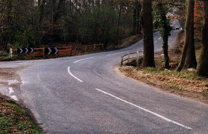
THE
BARON: Portrait of Louisa (John Moxey: September
1965)
The Baron drives David and Jane in his Jensen past the Thompkins Lane
junction as they race to save Louisa.
THE
BARON: The Persuaders
(Leslie Norman: October 1965)
The Baron's Jensen is followed by Hollins in a blue car past the
Thompkins Lane junction. The Baron manages to lose his pursuer in the
woods and then runs him off the road at the Morton Drive/Halse Drive
junction. The Baron (Steve Forrest) confronts
Hollins (Charles Houston)
but he flees into the path of a speeding car.
THE
BARON: So Dark The
Night (Robert Tronson: June 1966)
Cordelia drops Joyce off at Doctor Thornton's house (Gypsy
Cottage:
junction of Egypt Lane and Duke's Drive). Doctor Thornton
arrives back
at his house in his mini.
THE
BARON: Night of the
Hunter (Roy Baker: July 1966)
Two government agents follow Cordelia's car through the woods as
Mannering makes his escape by leaping into a passing car.
THE
SAINT: Invitation to
Danger (Roger Moore: March 1967)
Simon Templar (Roger Moore) is chased in his Volvo
and captured by
Ramon Falconi (Julian Glover), Moreno (Bryan
Marshall) and Al Vitale
(Charles Houston) who have been tipped off about his
whereabouts.
THE
SAINT: Little Girl Lost
(Roy Baker: Aug/Sep 1966)
Simon Templer rescues a girl from a pair of killers and offers to take
her to Dublin (back projection Stewarts Drive/Dukes
Drive/Egypt Lane ).
THE
AVENGERS: The Bird Who
Knew Too Much (Roy Rossotti: October 1966)
The mystery solved, Steed and Mrs Peel drive in the Bentley to
Heathcliff Hall (back projection Stewarts Drive/Dukes
Drive/Egypt Lane).
THE
AVENGERS: Murdersville
(Robert Asher: August 1967)
Doctor Haymes drives Mrs Peel back to Paul’s new house, and then back
to
the village in his Ford Corsair (back projection Stewarts
Drive/Dukes
Drive/Egypt Lane).
THE AVENGERS: The
Forget-Me-Knot (James Hill: December 1967)
Steed tells Mrs Peel she is being taken to see 'Professor Mater'. Brad
(Douglas Sheldon) and Carl (Alan Lake)
have driven there on their
motorbike and chop a tree down to block the path of Steed’s Bentley.
When Steed stops to clear the road they attack. Later Steed and Burton,
in Burton’s Hillman and Tara in her AC Cobra race to the villain's
hideout at ‘The Glasshouse’ where Emma is being held.
THE SAINT: The
Organisation Man (Leslie Norman: Spring 1968)
Simon leads a small group from Roper's private army when they hijack an
army lorry carrying a consignment of kilts. Later Leander (Glynn
Edwards) diverts the genuine fusiliers convoy up the wrong
road (Morton Drive/Halse Drive junction). He is
observed by Kate Barnaby
stationed in a nearby car. After Roper's men are defeated Craddock and
Spode
attempt to escape (up and down Sir Henry
Peakes Drive) but
they are cut off by Kate and Simon in an army Land Rover.
THE
SAINT: Legacy for the
Saint (Roy Ward Baker: Spring 1968)
Simon, Tony, Pietro and Charlie stop their car by a road junction
(Dukes Drive) to plot their ambush. The two
policemen in their
telephone repair van drive past. A few days later Pietro (Edward
Brayshaw) and Tony (T. P. McKenna) lead
the crooks as they fool the
police by exchanging the van carrying the bullion for a fake and
generally play cat and mouse with Inspector Teal.
THE
AVENGERS: You'll Catch
Your Death (Paul Dickson: May 1968)
Tara follows the Rolls Royce driven by Dexter and Preece from Seaton's
surgery in her AC 427, but loses it at the crossroads in the woods
(Victory Cross). As she leaves she is followed by
the Rolls.
THE
AVENGERS: Super Secret
Cypher Snatch (James Hill: June 1968)
After Steed (Patrick Macnee) leaves the Class Glass
Cleaning Company in
his yellow Roll Royce he is followed by a company van. Maskin (Simon
Oats) attacks Steed with a ladder as he is driving. After
crashing off
the road once, Steed attempts to follow the van but finds Maskin and
Vickers (Donald Gee) waiting around the corner with
a surprise for him.
Later Steed goes to pick up Tara King (Linda Thorson)
in the Rolls and
questions her about her day working at Cypher Headquarters. Later Steed
creeps up on Fred Davis (Anthony Blackshaw), who is
guarding the woods
by Cypher Headquarters, and overpowers him. Dressed in Davis’ Classy
Glass uniform he soon overcomes Warren, Davis’ partner.
THE
SAINT: The Ex-King of
Diamonds (Alvin Rakoff: Summer 1968)
Rod Houston and his chauffer are driving from Nice Airport into Mote
Carlo when Simon Templar passes them in a yellow Rolls Royce. They both
stop at some road works (Victory Cross) and Rod
offers to race Simon to
the steps of the Hotel Magnificent.
THE
SAINT: The World Beater
(Leslie Norman: Summer 1968)
During a test drive, Simon Templar races his car through the woods. Kay
Collingwood departs in her white Rolls through the woods after watching
The Saint crash. Whilst driving back to her office Kay drives past The
Stag pub but, when she enters the woods, has to drive onto Morton Drive
due to roadworks at the junction. Simon, who is following, is able to
overtake her in his Volvo by driving straight through the road works.
On his way back from seeing Kay he drops the bugging device she has
planted on him by a workman's pneumatic drill.
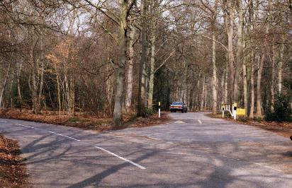
THE
AVENGERS: They Keep
Killing Steed (Robert Fuest: August 1968)
Steed escapes from the grounds of the conference centre and races
through the woods in a borrowed car with Tara and the Baron in hot
pursuit in the Baron's vintage Mercedes. Steed attempts to lose them at
the Morton Drive and Morton Drive/Halse Drive junctions.
THE
SECRET SERVICE: A
Question of Miracles (Ken Turner: Autumn 1968)
Father Unwin drives Gabriel to the desalination plant. He pulls off the
road but when he is about to leave he is delayed by an enthusiast
interested in the Model T Ford.
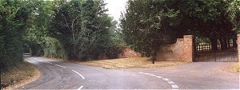
THE
SECRET SERVICE: The
Cure (Leo Eaton: Autumn 1968)
Father Unwin (Stanley Unwin) drives his Model T
Ford, Gabriel, through
the gates of Greenways Nursing Home (Junction of Thompkins
Lane and
East Burnham Lane) to investigate after Sakov has been
followed there.
(Identified by Sam Denham, June 2003)
THE
SECRET SERVICE: To
Catch a Spy (Ken Turner: Autumn 1968)
Father Unwin in Gabriel drives to investigate Burton's house. Later
Unwin follows Matthew as he leaves the house aboard the Heli-jet.
THE
SECRET SERVICE: The
Feathered Spies (Ken Turner: Autumn 1968)
As Masden drives to deliver the photographs of the SK-4 to De Groot he
drives past the Thompkins Lane junction. Later Father Unwin and Matthew
follow Masden in Gabriel when he returns. The next day Matthew and
Unwin go to see Masden driving Gabriel across Victory Cross. Later De
Groot parks his Jaguar at the roadside near the air base as he attempts
to destroy the SK-4. Gabriel with Unwin and Matthew aboard arrive just
in time to foil the attack.
THE
SECRET SERVICE: Last
Train to Bufflers Halt (Ken Turner: Autumn 1968)
As it turns from Park Lane onto to Morton Drive an attempt is made to
rob a Securicor van carrying one million pounds in used notes but the
ambush fails when McGrath, the van driver smashes through the
roadblock.
THE
SECRET SERVICE: More
Haste, Less Speed (Ken Turner: Autumn 1968)
Matthew and Father Unwin arrive in Gabriel at a junction (Junction
of
Green lane etc.) and turn towards Eastford, they encounter
the junction
again later. Lady Martha passes the junction on a motorbike she has
stolen from a car park (the Dell) on the way to the
farm three times.
The ambulance carrying Spiker turns towards Eastford at the junction,
passing it twice before it pulls up to let Spiker out.
THE
AVENGERS: Killer
(Cliff Owen: September 1968)
After leaving The Pirate armed with a shotgun Brinstead (William
Franklyn) races to the woods and waits in ambush for Steed (Patrick
Macnee) and Lady Diana Forbes-Blakeney (Jennifer
Croxton) when they
arrive. After Brinstead shoots at them they fight back using a
convenient dog cart. Later Lady Diana follows a bus from the factory to
the woods in her M.G. where it stops. Diana investigates the bus
cautiously, but when she finds it full of dummies she fails to notice
Paxton (Harry Towb) before he jumps her.
THE
AVENGERS: The Rotters
(Robert Fuest: September 1968)
Sandford (Noel Davis) blocks the road with his
truck and attacks Tara
(Linda Thorson) when she arrives in her Lotus. He
attacks her with an
axe, but when she gets the better of him he steals her car driving
through a gate he rots on the way. Later Tara follows Sawbow (Frank
Middlemass) to the woods where he is attacked by Sandford and
Jackson
(John Scott). Sawbow is shot when Tara tries to save
him and is herself
captured when the shed she is hiding in is rotted away.
DEPARTMENT
S: The Man From 'X'
(Gil Taylor: Early 1969)
Stewart is driving back from Farnborough when the liquid oxygen
released into his car starts to affect his mental state. He only just
manages to escape death when his car crashes off the road. Later Jason
King, posing as Max Rinston, is driven through the woods to the
villain's hideout. Later still the villains in their space suits travel
in a transit towards the cold store (Thompkins Lane junction).
RANDALL
AND HOPKIRK [DECEASED]: Vendetta
for a Dead Man (Cyril Frankel: Autumn 1968)
When Jeff follows Sam Grimes in his Vauxhall they pass a distinctive
gateway (Keansacre, Hawthorne Lane). Jeff's
Vauxhall attempts to force
Sam off the road by the Morton Drive/Halse Drive Junction but an
on-coming lorry forces Jeff off the road and into a tree. Jeff and
Marty drive to the cold store past Thompkins Lane. Later Jeannie's mini
passes the same junction when she is kidnapped by Roden.
(Keansacre identified by Alan Hayes, November 2017)
RANDALL
AND HOPKIRK [DECEASED]: Money
to Burn (Ray Austin: Late 1968)
Elizabeth and O'Malley are involved in a furious car chase through the
woods as they try to capture Anne-Marie and Olga. Later they pull the
car off the road near the Thompkins Lane junction in order to get
better acquainted.
UFO: Identified (Gerry
Anderson: May 1969)
A u.f.o. attacks the convoy taking Straker, Henderson and the Minister
to
an important conference as they travel through the woods.
UFO:
Destruction (Ken
Turner, 1970)
Admiral Sheringham’s limousine is escorted to S.H.A.D.O. headquarters
through the woods (footage from Identified).
UFO:
The Responsibility Seat
(Alan Perry: September 1969)
After running Jo Fraser off the road Ed Straker drives her through the
woods to a restaurant so they can talk (back projection).
THE
PERSUADERS!: The Gold
Napoleon (Roy Ward Baker: 1970)
After escaping from the smuggler's factory on a motorcycle Danny Wild
is chased by Pullicino in a Mercedes through a wood. Pullicino gives up
the chase and Danny makes his way to his Ferrari.
THE PERSUADERS!: That's Me Over There (Leslie Norman: 1970)
THE
PERSUADERS!: The Time
and the Place (Roger Moore: March
1971)
Brett in his Aston Martin DBS races after the two men who tried to burn
Danny alive in his Ferrari.
THE
NEW AVENGERS: Hostage
(Sidney Hayers: Spring 1977)
Steed (Patrick Macnee) drives in his yellow Rover
to the 'phone box at
Pembury Park (Hawthorn Dell Car Park) to receive
further instructions
from Purdey's kidnappers.
Television:
DOCTOR WHO: State Of Decay (1980)
F3: Stone Dean Farm,
Potkiln Lane, Jordans, nr. Chalfont Common
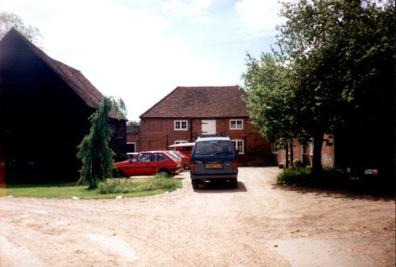
UFO: The Sound of Silence
(David Lane: May 1970)
Russ (Michael Jayston) and Anne (Susan
Jameson) exercise their horses
at their farm. A tramp, Cully (Nigel Gregory),
steals into the stables
at night and comes to a sticky end. Paul Foster (Michael
Billington)
visits the farm whilst searching for a grounded ufo and joins Anne
and
Mr. Stone (Richard Vernon) in a search for Russ.
F4: Harefield Church, Church Hill, Harefield
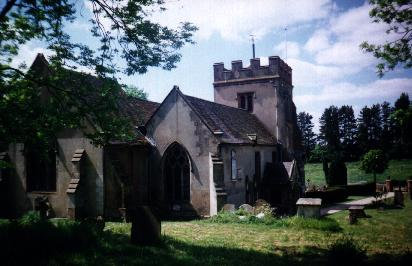
JOE 90: The Unorthodox
Shepherd (Ken Turner: 1968)
Joe and Sam investigate a
supposedly
haunted church.
UFO: The Square Triangle
(David Lane: September 1969)
Liz Newton (Adrienne Corri) visits her husband's
grave and is met by
her lover, Cass, as she leaves.
THE
NEW AVENGERS: To Catch
A Rat (James Hill: Summer 1976)
Gunner (Ian Hendry) enters the church and radios to
his base to be
collected. Cledge (Barry Jackson) arrives at the
church and begins to
hunt for Gunner who gets to him first. When Gambit (Gareth
Hunt) and
Purdey (Joanna Lumley) arrive in their Range Rover
they find Cledge
dead and Gunner gone.
Film:
DREAM DEMON (1989)
F5: Hall Barn,
Beaconsfield
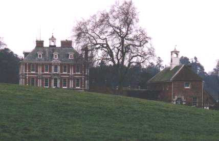
THE
HUMAN JUNGLE: Fine
Feathers (Vernon Sewell, 1963)
The country house where Penny's parents live.
(Spotted by John Stewart, October 2017)
THE
BARON: Masquerade
(Cyril Frankel: February 1966)
A Rolls Royce arrives at 'The Gables' and drops off Mannering before
driving away. Later Mannering escapes from the house but is seen by
Revel (John Carson). Cordelia manages to find the
house but is later
captured. The following day Mannering has to knock Revel out in the
grounds in order to keep his identity secret.
THE
SECRET SERVICE: To
Catch a Spy (Ken Turner: Autumn 1968)
The heli-jet carrying Grey after his escape lands in a secret hanger
beneath the tennis court of Sir Humphrey Burton's country house. Father
Unwin arrives at the house (Stanley Unwin) in
Gabriel whilst
investigating Grey's escape.
Film:
RUN A CROOKED MILE
(1969)
THE WALKING STICK
(1970)
GOSFORD PARK (2001)
Television:
THE GOOD GUYS: Relative Values (1991)
JEEVES AND WOOSTER (1993)
JONATHAN CREEK: The
Eyes of Tiresias (1999)
TESS OF THE DURBERVILLES
(1999)
F6: Holy Cross Church, Church End, Sarratt
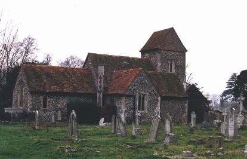
THE
NEW AVENGERS: K is for
Kill Part One: The Tiger Awakes (Yvon Marie
Coulais:
Summer 1977)
A Russian soldier sneaks through an English church yard with deadly
intent.
F7: Sarratt Village
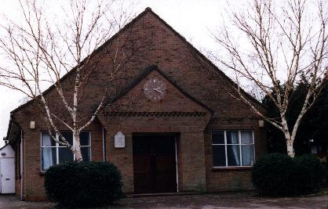
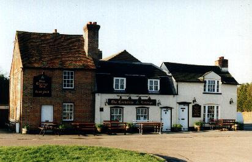
THE
NEW AVENGERS: K is for
Kill Part One: The Tiger Awakes (Yvon Marie
Coulais:
Summer 1977)
A village in England, July 25th 1965. A Russian soldier runs past The
Cricketers public house before and after gunning down a Salvation Army
band in the Village Hall. Steed goes to investigate but is unable to
solve the mystery.
F8: Commonwood Common House, Commonwood Common, Quickmoor Lane nr. Sarratt
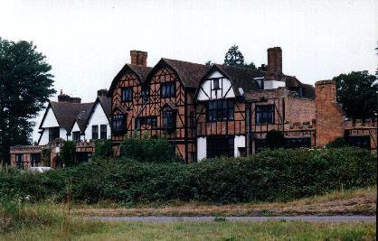
THE
BARON: The Maze
(Jeremy Summers: June 1966)
Cordelia drives her Daf past the Commonwood Common House whilst The
Baron tries to re-trace his steps. Cordelia drives her Daf across the
crossroads (at Red Lion Lane/Plough Lane) as she
follows Mannering's
directions.
THE
BARON: Roundabout
(Robert Tronson: August 1966)
Jeanne Varda drives The Baron and George Declair out of Paris followed
by the police.
THE
SAINT: Flight Plan
(Roy Baker: September 1966)
Simon Templar's white Volvo drives through the countryside passing the
house.
Television:
THRILLER: Murder In Mind (1973)
F9: Great Missenden
HAMMER
HOUSE OF HORROR: Charlie
Boy (Robert Young: 1979)
Graham Elder (Leigh Lawson) is chatting to
girlfriend
Sarah (Angela Bruce) while driving his orange Ford
Escort when he
overshoots the give way (at the junction of Rignall Road)
cutting up a
Mercedes (approaching from Aylesbury Road) forcing
it to screech to a
halt. Later Graham proceeds with haste to recover his stolen antique
African wood carving nicknamed "Charlie Boy". He pulls up outside a
house (The GatewaySchool)and confronts a antiques
dealer (David Healy)
forcing his way inside after spotting the item in question.
(Identified by Ros Connors with thanks to Yvonne Williams,
June 2004)
HAMMER
HOUSE OF HORROR: Rude
Awakening (Peter Sasdy: 1980)
Norman Shenley (Denholm Elliott) arrives for work
at his estate agency
(Station Approach) and is greeted by his secretary,
Lolly (Lucy
Gutteridge). Mr. Rayburn (James Laurenson)
arrives with a property to
sell.
F10: Marlyn Cottage, Blackwell Hall Lane, Ley Hill, nr. Chesham
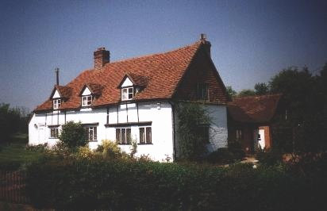
THE SAINT: Little Girl Lost
(Roy Baker: Aug/Sep 1966)
Simon and Mildred eventually find their way to Brendan's cottage.
Mullins and Brine arrive in their Beetle soon after. In the morning
Simon leaves in a vintage car to collect his Volvo, on his return he
finds that the villains have made their move.
UFO: A Question of
Priorities (David Lane: August 1969)
Straker (Ed Bishop) arrives at the cottage with his
son (Barnaby Shaw)
and meets his ex-wife Mary (Suzanne Neve) and her
new husband (Philip
Madoc). As he is leaving, his son is involved in an accident.
An
ambulance is called and it arrives at the Ley Hill Road junction and
speeds past Ashridge Farm towards the Cottage. Straker follows in his
car as it leaves.
UFO: Sub-Smash (David
Lane:
December 1969)
Straker thinks about his son's death when he is trapped in Skydiver.
UFO: The Man Who Came Back
(David Lane: June 1970)
The ambulance carrying Colonel Grey speeds past Ashridge farm on its
way to hospital.
UFO: Mindbender (Ken
Turner:
August 1970)
Straker sees a film of the death of his son being screened as he walks
around the film studio.
F11: Latimer, Bucks.
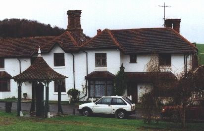
DEPARTMENT
S: The Pied Piper of
Hambledown (Roy Ward Baker: Summer 1968)
Susan Lewis (Gina Warwick) wakes up in the village
of Hambledown to
find all the inhabitants have disappeared. Stewart Sullivan (Joel
Fabiani) and Annabelle Hurst (Rosemary Nicols)
arrive at the village to
investigate and they book into The Duke of Cumberland.
RANDALL
AND HOPKIRK [DECEASED]: For
The Girl Who Has Everything (Cyril Frankel:
Summer 1968)
Jeff stays at the pub, The Duke of Cumberland.
DEPARTMENT
S: Who Plays the Dummy?
(John Gilling: Autumn 1968)
The location of the Duke of Cumberland pub.
RANDALL
AND HOPKIRK [DECEASED]: The
Man from Nowhere (Robert Tronson: Spring 1969)
'Marty' and Jeannie arrive at the inn, The Duke of Cumberland, in a
Cotswolds village, followed rapidly by Jeff and Marty in the Vauxhall,
plus the villains who leave Griggs (Neil McCarthy)
guarding the van
with Rex.
INSPECTOR
MORSE: Deadly Slumber
(Stuart Orme: 1992)
Constable Willis (Connor Byrne) arrives in his
police car for a meeting
with Detective Sergeant. Lewis (Kevin Whately)
after visiting
Stepping's house.
Television:
PATHFINDERS: Nightmare (1970)
F12: Bulstrode Park gates, Hedgerley Lane, Gerrards Cross
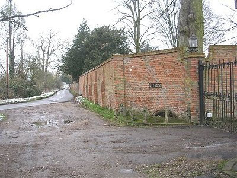
STRANGE
REPORT: Report No.4407-HEART:'No choice for the donor'
(Robert Asher: 1968)
The car with Gynt aboard drives along a country lane then turns sharply
down a lane blocked by a road works sign (a couple of hundred
yards
from these gates). The police do not notice and continue past
the
junction. Later the police retrace their steps and remove the road
works barrier. Whilst searching for Ham, a police car carrying Strange
enters the gates of one of the many local estates (Bulstrode
Park). The
police arrive at one of the many large houses in the area (‘Ponders’)
during their search for Gynt.
(Ponders found by Jaz Wiseman, April 2005, blocked lane
Identified by
Alan Field, July 2007)
F13: York House School, Redheath, Sarratt Road, Chandler's Cross
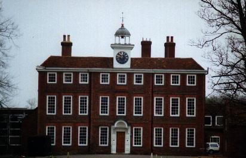
UFO: Ordeal (Ken Turner:
August 1969)
Foster's car approaches the health centre, from where he is later
kidnapped and taken to a waiting u.f.o.
F14: Moor Park Golf Club, Anson Walk, Batchworth Heath
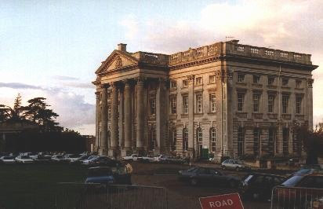
THE
BARON: The Maze
(Jeremy Summers: June 1966)
Agents check the motorcade as it arrives at Martinfield Golf Club gate
house on Anson Walk. The motorcade arrives with the delegates for the
conference at the Golf Club.
THE
CHAMPIONS: The Dark
Island (Cyril Frankel: February 1967)
Craig (Stuart Damon) and Richard (William
Gaunt) use their powers in a
friendly game of golf.
THE
CHAMPIONS: The
Interrogation (Cyril Frankel: Autumn 1967)
Stock footage from The Dark Island.
THE
CHAMPIONS: Shadow of
the Panther (Freddie Francis: Late 1967)
Stock footage from The Dark Island.
Films:
JASSY (1947)
GENEVIEVE (1953)
BROTHERS IN LAW (1957)
THE SPY WITH A COLD NOSE
(1966)
THE VAMPIRE LOVERS
(1971)
Television:
THE BROKER'S MAN: Keyman (1998)
F15: Christ Church, Rickmansworth Road, Chorleywood
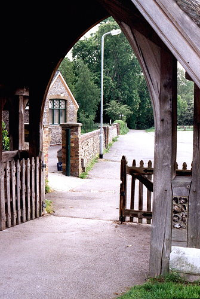
THE BARON: Portrait of Louisa (John Moxey: September 1965)F16: Old House Lane, Langley Bury
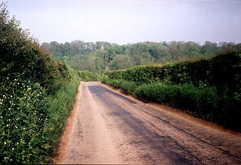
THE
AVENGERS: Death's Door
(Sidney Hayers: May 1967)
On the way to see Sir Andrew with Emma, the brakes fail on Steed's
Bentley and they crash into a fence at the bottom of 'Spout Hill'.
Steed (Patrick Macnee) and Sir Andrew Boyd (Clifford
Evans) depart from
Sir Andrew's house (Great Westwood) aboard a black
limousine after Sir
Andrew checks the butler for missing buttons.
F17: Denham Golf Club,
Tilehouse Lane, Denham
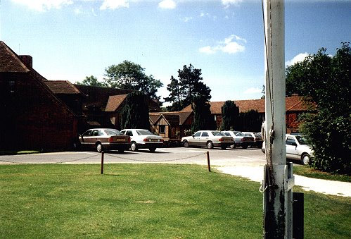
MAN
IN A SUITCASE: Which
Way Did He Go McGill? (Freddie Francis: Summer
1967)
McGill (Richard Bradford) goes to the golf club to
interview the
Secretary, Soames (Hugh McDermot), and identify a
former member.
F18: Denham Golf Club Station, Slade Oak Lane, Denham
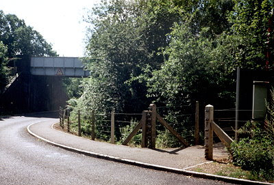
MAN
IN A SUITCASE: Brainwash
(Charles Crichton: October 1966)
McGill (Richard Bradford) arrives at the station by
train and is met by
John (Colin Blakely). He is taken to meet his
client (Howard Marion
Crawford), who is waiting by his car. As McGill gets into the
car he is
knocked out by the chauffeur and is driven away by the three men.
MAN
IN A SUITCASE: Which
Way Did He Go McGill? (Freddie Francis: Summer
1967)
Kevin Earle (Donald Sutherland) arrives at the
station on the London
train and walks down towards the railway bridge.
F19: The Rose and Crown, Harefield Road, Batchworth
INSPECTOR
MORSE: The Ghost In
The Machine (Chris Burt: 1988)
Lady Hanbury (Patricia Hodge) gets her chauffeur (Michael
Thomas) to
drop Betty Parker (Lill Roughley) off at her pub in
the Rolls.
F20: The Bricklayer's Arms, Bricklayers Arms, Hogpits Bottom, Flaunden
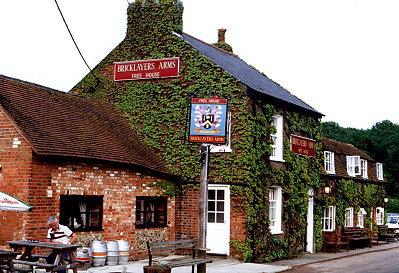
THE
BARON: The Maze
(Jeremy Summers: June 1966)
Cordelia and Mannering leave The Ancient Golfer and walk across the
golf course followed by Walter Farrell.
F21: Denham Aerodrome, Denham
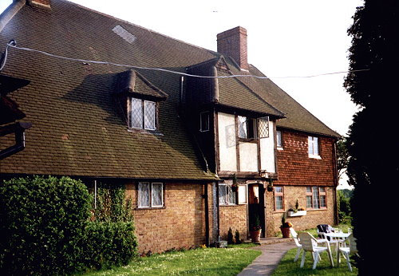
THE
PERSUADERS!: Chain Of
Events (Peter Hunt: Peter Hunt 1970)
Eastern Europe - An small aeroplane arrives and the pilot gets out
watched by four Soviet officials by a jeep in the nearby trees. They
are all waiting for Baxter (Gerry Crampton) who
arrives on a motorbike
with a case. The pilot attempts to shoot Baxter as he arrives, but his
gun jams. Baxter tries to escape, but he is pursued and gunned down by
the men in the Jeep. One of the men, Profokiev (Leon Eagles),
gets into
the plane with a case identical to that of Baxter and flies off with
the pilot.
THE PERSUADERS!:
The Morning After
(Leslie Norman: 1971)
Lars Seelman (Griffith Jones) is kidnapped by
Kristen
(Catherine Schell) and Jon (Tony Bonner)
and driven from the main road
to a Cessna aeroplane parked at a small airstrip (the field
opposite
Denham Aerodrome end of the runway 24).
Later Brett
(Roger Moore) and Danny (Tony Curtis)
arrive in a Range Rover just in
time to prevent the plane taking off. The police are called to take
Kristen and Jon away (Denham Aerodrome).
(additional information from Mark Pond, December 2012)
THE
PROTECTORS: 2000 ft To Die (John Hough: 1972)
Harry Rule (Robert Vaughan) and the Contessa (Nyree
Dawn Porter)
attempt to persuade Freddie Reiwald (Harvey Hall)
not to partake in a
parachute jump but Freddie is adamant. To be on the safe side both
Harry, the Contessa, Paul (Tony Anholt) and Chino (Anthony
Chinn) keep
an eye on the filming. Whilst Freddie makes the jump, Susan (Jacqueline
Stanburg) is being watched by a sniper with a telescopic
rifle. Paul
and the Contessa attempt to locate the sniper before Freddie jumps from
the plane. Once they have located the gun which is concealed in the
camera, the Contessa drives a van between Susan and the camera whilst
Paul tackles the sniper. Harry and Freddie land safely but they are
nearly killed when a car driven by MAN 3 attempts to run them down.
Films:
THE WRONG ARM OF THE LAW
(1962)
Television:
DOCTOR WHO: The Five Doctors (1983)
A LITTLE BIT OF FRY AND LAURIE
(1993)
MADAM SIN (1972)
F22: Sandy's Garage, Long Lane, Hogpits Bottom, Flaunden (demolished, Cowslip Cottage built on site)
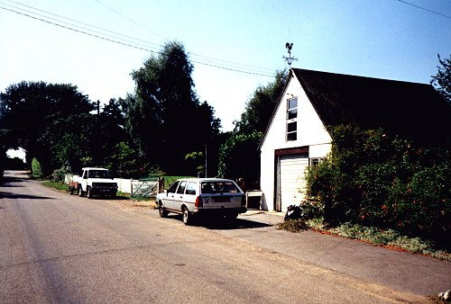
THE
BARON: The Maze
(Jeremy Summers: June 1966)
Mannering (Steve Forrest) pulls up at Sandy's
garage and asks the
attendant to fill his Jensen. Later Mannering is able to take Cordelia
(Sue Lloyd) there in her Daf in an attempt to find
out what happened to
him and they search the garage together.
F23:
Rickmansworth Masonic School for Girls, Chorleywood Road, Rickmansworth
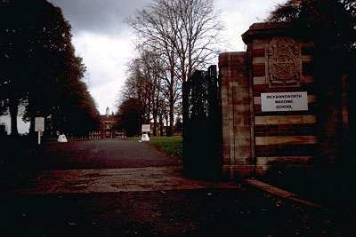
INSPECTOR
MORSE: Cherubim
& Seraphim (Danny Boyle: 1991)
Chief Inspector Morse (John Thaw) goes to Marilyn's
school and talks
with her teacher, Mr Greenhill (Charlie Roe), about
her suicide. They
are watched by Vicky Wilson (Liza Walker). The
following day Morse
interrupts a sex education lesson looking for Vicki, where the teacher
(Tania Rodrigues) is telling off Simon (Simon
Gilbey).
F24: Ye Olde Green Manne, Batchworth Heath Hill, Batchworth Heath
INSPECTOR
MORSE: Cherubim
& Seraphim (Danny Boyle: 1991)
Chief Inspector Morse (John Thaw) leaves a pub
without finishing his
pint.
F25: Wellington Place, High Street, Harefield (Demolished)
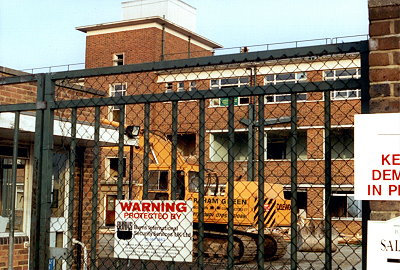
```INSPECTOR
MORSE: Seasons Six,
Seven and Eight
This building featured as the Oxford police station
where Morse and Lewis worked.
F26: Abbey Park Farm, nr. Littleworth Common
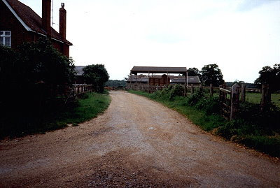
THE
SECRET SERVICE: More
Haste, Less Speed (Ken
Turner: Autumn 1968)
Lady Martha arrives at Greenacre Farm on her stolen bike followed by
the miniaturised Gabriel with Matthew and Father Unwin aboard. Unwin
and Matthew leave later with the counterfeit bank plates.
F27: Shardeloes House, nr. Amersham
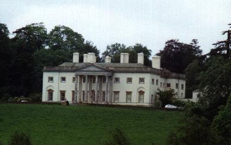
JASON
KING: Chapter One: The
Company I Keep (Cyrel Frankel: )
A party of Roman Diplomats arrive at a Villa near Gorizia for a wild
party. Later Jason and the Contessa di Magiore arrive at the villa
after following the description of the route in Jason's latest chapter.
After the police arrive Jason and the Contessa make a hasty retreat.
Jason returns to the house in his Bentley to find Alfred Thistle dead.
Jason chases the killer out of the villa and gives chase as she drives
away.
F28: Beaconsfield
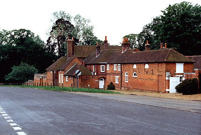
THE
HUMAN JUNGLE: Fine Feathers (Vernon
Sewell, 1963)
Beaconsfield Town Hall - The exterior of the magistrates’ court
(Spotted by John Stewart, October 2017)
THE HUMAN JUNGLE: Time-Check
(Alan Cooke, 1963)
Beaconsfield Town Hall - Magistrates’ court (re-use of
footage from
Fine Feathers)
(Spotted by John Stewart, October 2017)
THE
SECRET SERVICE: May
Day May Day (Allen Parry: )
As Joe is about to inform the police about his suspicions he is shot
down from a passing car (on Windsor End).
Television:
GRANGE HILL (1979)
F29: Dodds Mill, Chenies
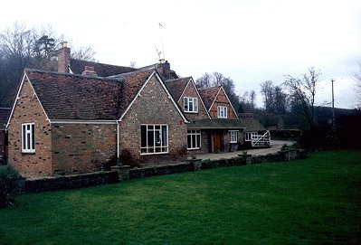
INSPECTOR
MORSE: Deadly Slumber
(Stuart Orme: 1992)
Chief Inspector Morse (John Thaw) arrives in his
Jaguar at Michael
Steppings' house just in time to find Steppings (Brian Cox)
having
problems with his Ferrari Testarossa. Morse talks to Steppings about
Brewster's death. Later Constable Willis (Connor Byrne)
knocks on the
door posing as a crime prevention officer. A few days later Morse
returns with Detective Sergeant Lewis (Kevin Whately)
looking for
Steppings and they find his body in the garage.
F30: Gerrards Cross
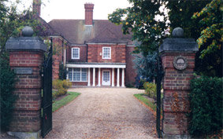
THE
PERSUADERS!: The Long
Goodbye (Roger Moore: 1971)
Danny is taken by force and held in a house (Badminton House)
on the
corner of Vicarage Way and Marsham Way. On the way there Danny hears a
schoolgirl (Deborah Moore) rattling her ruler
against the iron gates of a house (Cleveland in Marsham Way).
Later
Danny phones Brett to tell him the location of the house and we see him
drive into the road Vicarage Way. Sir Hugo Chalmers (Leo Genn)
is later
run down (at the junction of Vicarage Way and Marsham Way).
(Found by Jaz Wiseman)
F31: Moat Farm, Hedgerley Lane
THE
PERSUADERS!: Someone
Waiting (Peter Medak: 1971)
This is the farm used by the Jenkins brothers.
F32: Little Westwood, Bucks Hill, Kings Langley
THE
AVENGERS: Death's Door
(Sidney Heyers: May 1967)
Steed (Patrick Macnee) arrives in his Bentley at
the home of Becker
(Marne Maitland). Steed interviews Becker while he
shoots a target to
the rear of his property. Becker takes the opportunity to attempt to
shoot Steed when his questioning gets too close to the mark.
(Identified by Matthew George)
F33: Sherwood House,
Tilehouse Lane, Denham
THE
PERSUADERS!: A Death
In the Family (Sidney Hayers: 1971)
General Randolph Sinclair Strathers (Roger Moore)
is dictating his
memoirs in the garden of his country house when he spots a remote
control model tank moving across his lawn. On closer inspection, the
tank explodes killing the General.
Note: this was Roger Moore home at the time of filming.
(Found by Jaz Wiseman, August 2002)
F34: Wooburn Green
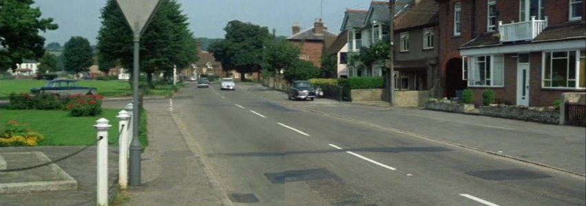
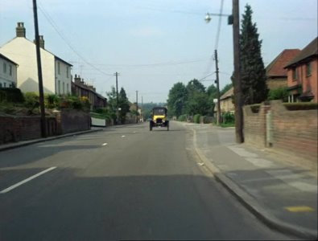
THE
SECRET SERVICE: To
Catch a Spy (Brian Heard: Autumn 1968)
Father Unwin, in his Model T Ford, Gabriel, follows the Jaguar carrying
Sir Humphrey and Grey as it makes its way into London (Town
Lane and
Wycombe Lane).
(Spotted by Ian Pratt, November 2002)
F35: Hedgerley
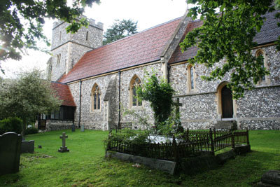
THE
NEW AVENGERS: House Of
Cards (Ray Austin: Spring 1976)
Cartney (Lyndon Brook) arrives at a church (Saint
Mary the Virgin)
where The Bishop (Derek Francis) is giving a sermon.
(Identified by Alan Field, July 2007)
THE
PERSUADERS!: A Home of
One's Own (James Hill: 1971)
Brett buys a drink for a local poacher at the pub where he is staying
(The White Horse, Village Lane). The following
morning Brett (Roger
Moore) meets Lucy Scott (Hannah Gordon)
just as she is leaving. Danny
(Tony Curtis) arrives in a Land Rover and drags
Brett away.
(Identified by Nick Haugh, February 2004)
F36: The De Vere Bellhouse Hotel, Oxford Road, Beaconsfield
THE
PERSUADERS!: Nuisance
Value (Leslie Norman: 1971)
Brett Sinclaire (Roger Moore) arrives in his Aston
Martin at the .
Hotel Don Juan in Spain. Soon after Lisa (Viviane Ventura)
and Mary
(Sarah Lawson) leave the hotel to go to town and
Lisa is kidnapped by
two masked men in the car park. Danny (Tony Curtis)
races after them in
his Ferrari. Later that evening Mr Zorakin (George Murcell)
arrives in
his Daimler with Patterson (David Cargill) and is
shown straight in.
Lord Sinclair finds Danny’s car in the car park with a ransom note
attached,. Zorakin and Patterson are nearby and jump to conclusions.
(Found by Sam Denham, February 2004)
F37: Meadow Cottage, Private track, off the A413 St Peter by Pass (demolished)
THE
PERSUADERS!: A Home of
One's Own (James Hill: 1971)
Brett (Roger Moore) and Danny (Tony
Curtis) arrive at Danny’s country
cottage.
(Found by Jaz Wiseman June 2004)
F38: Chalfont Saint Peter
STRANGE
REPORT: Report No.2475
- REVENGE: 'When a man
hates' (Charles Crichton: November 1968)
Mrs Mary Hanson (Rosemary Leach) goes to St.
Monica’s Church (St.
Joseph's Catholic Church) to find some sort of answer to her
families’
problems. Instead, she finds Adam Strange (Anthony Quayle)
waiting for
her.
(Jaz Wiseman, April 2005)
F39: Holy Trinity Church, Seer Green
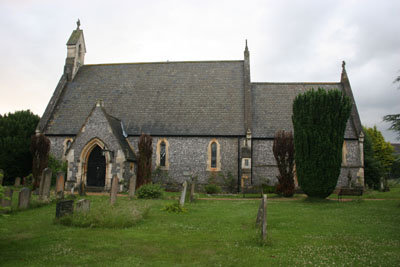
MAN
IN A SUITCASE: All
That Glitters (Herbert Wise: August/September
1966)
The church in the village of Norton.
(Spotted by Alan Field, June, 2007)
F40: Junction of Old Uxbridge Road and Denham Way
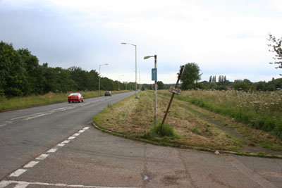
STRANGE
REPORT: Report 0649 SKELETON: 'Let Sleeping Heroes
Lie' (Peter Medak: August/September 1968)
Clinton (Tom Adams) takes Strange (Anthony
Quayle) in his own taxi to a
sand quarry outside London.
(Identified by Alan Field, June 2007)
Film:
THE LIFE AND DEATH OF COLONEL BLIMP
(1943)
GENEVIVE (1953)
F41: Chalfont St. Giles
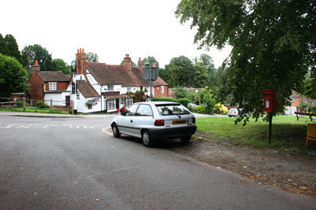
THE
NEW AVENGERS: The Tale
of the Big Why (Robert Feust: August 1976)
Purdey (Joanna Lumley) and Gambit (Gareth
Hunt), in their Range Rover
find themselves in the village of Neverton which reminds Gambit of a
conversation he once had with Brandon. Poole (Rowland Davis)
and Roach
(Gary Waldhorn) have been watching the two agents
and Poole makes the
connection with Turner a friend of Brandon.
(Identified by Alan Field, July 2007)
F42: Springwell Chalk Pit, Springwell Lane, Harefield
THE
BARON: The Long, Long
Day (Roy Baker: April 1966)
Marco Navini (Peter Arne) and his brother, Bruno
dispose of the body of
Pia Vallachioin a quarry, but they are watched by Maria Pullerno who
drives away before they can dispose of her as well.
(Identified by Alan Field, August 2007)
THE
AVENGERS: The Fear
Merchants (Gordon Flemyng: September 1966)
Gilbert (Garfield Morgan) attempts to bury Steed (Patrick
Macnee) after
luring him to a quarry. A fight ensues which ends with Gilbert being
crushed by a bulldozer.
MAN
IN A SUITCASE: Variation
on a Million DollarsPart 2 (Pat Jackson:
November 1966)
The crate carrying McGill (Richard Bradford) is
taken by truck to a
quarry outside Lisbon. Once opened McGill is confronted by hostile
members of the ships crew who beat and rob him. They do not find his
key. McGill dust himself down and starts to make his way on foot to
Lisbon.
THE
AVENGERS: The
Interrogators (Charles Crichton: October 1968)
Steed (Patrick Macnee) arrives too late to save
Izzy Pound, who is
rehearsing his amazing marching sound, from being eliminated by
Corporal Blakie (Glyn Edwards)
(Identified by Alan Field, August 2007)
RANDALL
AND HOPKIRK [DECEASED]: The
Trouble with Women (Cyril Frankel: October 1968)
Jeff is taken to be executed and he is forced to walk across a deserted
quarry by Alan Corder. Marty’s message has got to the police and they
arrive just in time to sve Jeff and arrest Corder and Susan Lang.
THE
AVENGERS: They Keep
Killing Steed (Robert Fuest: August 1968)
Arcos (Ray McAnally) and Zerson (Norman
Jones) work on their project to
duplicate John Steed in an underground bunker concealed beneath a
derelict London taxi sitting in a chalk quarry. They kidnap the real
Steed (Patrick Macnee) to help with the process.
The site is guarded by
a number of Arcos’ men. Steed eventually manages to escape, but has to
return to the quarry in order to prove his true identity. He is
followed by Baron Von Curt (Ian Ogilvy) in his car
with Tara (Linda
Thorson) who join in a battle between Arco’s forces and Steed.
(Spotted by Sam Denham, August 2007)
THE
AVENGERS: Thingumajig
(Leslie Norman: January 1969)
Inge Tilson (Dora Reisser) takes Steed (Patrick
Macnee) to see a nearby
quarry in the Landrover. She claims it has not been used in years, but
Steed soon spots that a vehicle has recently run over the quarry wall
and crashed to the floor.
(Spotted by Sam Denham, August 2007)
STRANGE
REPORT: Report
2641-Hostage: 'If You Won’t Learn Die!' (Charles
Crichton,
February 1969)
The exchange spot - lots of action with ALL the cast members.
(Identified by Alan Field, August 2007)
THE
NEW AVENGERS: Obsession
(Ernest Day: Spring 1977)
Larry Doomer's father is stopped at a road block in a middle eastern
country and killed.
Television:
DOCTOR WHO: The Three Doctors (1972)
BLAKE'S 7: Cygnus Alpha (1977)
BLAKE'S 7: Orac (1978)
DOCTOR WHO: Earthshock (1981)
DOCTOR WHO: The Twin Dilema (1984)
DOCTOR WHO: Edelta and the Bannermen (1987)
F43: Junction 2, M40 nr Beaconsfield
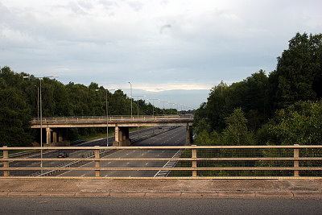
UFO: The Psychobombs (Jeremy
Summers: July 1970)
Mason (Mike Pratt) is having trouble with his men
on his motorway
construction site when the aliens summon him to do their will. He walks
off the site, narrowly missing being ‘graded’ on the way.
(Identified by Mark Pond, August 2007)
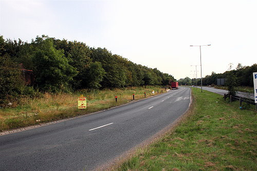
THE
PERSUADERS!: The Gold
Napoleon (Roy Ward Baker: 1970)
Brett Sinclair (Roger Moore), in his Aston Martin
and Danny Wilde (Tony
Curtis) in his Dino Ferrari with Michelle Devigne (Susan
George) are on
the trail of the Gold Napoleons which are being smuggled out of the
county in a truck. Brett has found the truck on a motorway (A355
between M40 and Pyebush Roundabout) but he is delayed at the
border
crossing. Danny finds a side road on to the motorway and catches up to
the truck. Brett manages to persuade a customs officer (Jean
Driant) to
let him through and soon Danny and Brett have captured the truck. They
head back to France but are spotted by Pullicino (Alfred
Marks) and his
men in their Mercedes. Pullicino gives chase and they all end up back
at the customs post.
(Identified by Mark Pond, August 2007)
F44: Greensleeves, Manor
Lane, Gerard’s Cross
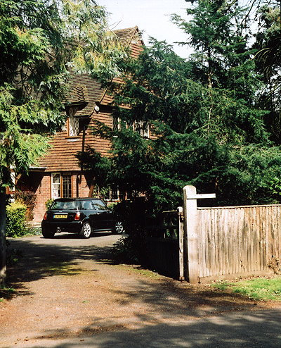
THE
SECRET SERVICE: The
Feathered Spies (Ian Spurrier: Autumn 1968)
Father Unwin (Stanley Unwin) arrives in his Model T
Ford, Gabriel, at
the home of John Masden. As he berates Masden for speeding the previous
evening, Mathew has a look around the property.
(Sam Denham, November 1998)
F45: Packhorse Lane, Gerrards Cross
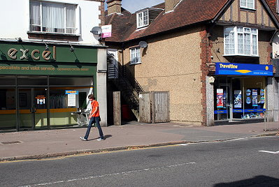
STRANGE
REPORT: Report 1021
Shrapnel: ’The Wish in the Dream’ (Brian
Smedley-Aston,
February, 1969)
Carol Webber (Sylvia Syms) returns a very
mysterious dinner jacket to
the dry cleaners (17 Packhorse Road).
(Identified by Mark Pond, September 2007)
F46: Bulstrode Court, Oxford Road, Gerrard's Cross
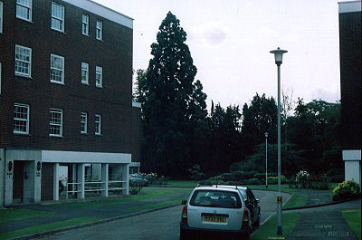
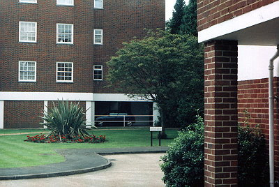
THE
NEW AVENGERS: The
Eagle's Nest (Desmond Davis: April 1976)
John Steed (Patrick Macnee) arrives at George
Stannard’s to collect
him, but finds Ralph (Jerold Wells) has taken up
residence.
(Identified by Sam Denham, October 2007)
F47: Thatched Cottage,
Slade Oak Lane, Upper Denham
RANDALL
AND HOPKIRK [DECEASED]: For
the Girl Who Has Everything (Cyril Frankel:
Summer 1968)
Jeff follows Larry to a cottage where he is meeting his girlfriend,
Laura Slade.
F48: Little Chalfont
HAMMER
HOUSE OF HORROR: The
Carpathian Eagle (Francis Megahy: 1980)
Natalie (Suzanne Danielle) is propositioned by a
businessman as she
walks down the street.
(Found by Hammer
House of Horror Web Site)
F49: Gerrards Cross Lawn
Tennis Club, Bull Lane, Chalfont Saint Peter
STRANGE
REPORT: Report No.4407-HEART:'No choice for the donor'
(Robert Asher: July 1968)
Whilst playing tennis, Tony Williams (Mark Hawkins)
is approached by
Segarus (Kenneth Griffith) with an offer of work in
his country.
(Identified by Mark Pond, July 2008)
F50: Peterley Manor House, Prestwood, Great Missenden
HAMMER
HOUSE OF HORROR: Charlie
Boy (Robert Young: 1979)
Graham Elder (Leigh Lawson) is and Sarah’s (Angela
Bruce) house.
(Identified by www.maverick-media.co.uk)
HAMMER
HOUSE OF HORROR: The
Guardian of The Abyss (Don Sharp: 1980)
Mikes House.
(Identified by www.maverick-media.co.uk)
F51: Croxley Green, Hertfordshire
SABER
OF LONDON: Saber's Bow
and Arrow (Max Varnel: 1958)
Linda (Ann Stephens) and Frank (Michael
Bryant) attempt to get married
so they drive to Gretna Green and book into an inn (The Coach
&
Horses, The Green). Pete Paulson (Neil McCallum),
Mark Saber (Donald
Grey) and Harold Gregson (Vincent Holman)
arrive at the inn looking for
Gregson's daughter in Saber's Porsche 356 cabriolet.
(Identified by Greg Mishevski, 13th April 2012)
F52: Tilehouse Lane, Denham
DEPARTMENT
S: Who Plays the Dummy?
(John Gilling: Autumn 1968)
From his helicopter Gilford (Alan MacNaughton)
watches as he drives
Jason and Annabelle's white Jaguar by remote control (interior
helicopter and aerial shots of Jaguar).
RANDALL
AND HOPKIRK [DECEASED]: It's
Supposed to be Thicker Than Water (Leslie
Norman:
September 1968)
Johnny Cracken drives his borrowed Jaguar along a country road (aerial
shot from the above)
F53: Springwell Lane, Harefield
MAN
IN A SUITCASE: Brainwash
(Charles Crichton: October 1966)
John projects an image of a car speeding down a narrow country lane
into McGill's cell. The car appears to crash into a lorry blocking the
road and McGill is sent crashing to the floor by the impact.
(Identified by Geoff Dodd, May 2012)
RANDALL
AND HOPKIRK [DECEASED]: It's
Supposed to be Thicker Than Water (Leslie
Norman:
September 1968)
Johnny Cracken drives his borrowed Jaguar along a country road
(driver's point of view from the above).
(Identified by Geoff Dodd, May 2012)
F54: Tara Stables, Colley
Hill Lane, Hedgerley, Slough
THE
PERSUADERS!: Element
of Risk (Gerald Mayer: 23rd Feb 1971)
The farmhouse where Danny and Lord Brett are held the night before the
raid on the Amercian Air base. They leave in the morning with disguised
as USAAF personell.
F55: Beaconsfield Cricket Club, London Road junction with Minerva Way, Beaconsfield
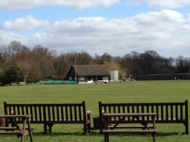
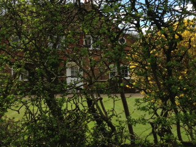
THE
NEW AVENGERS: Dead Men
Are Dangerous (Sidney Hayers: Spring 1977)
John Steed (Patrick Macnee), Gambit (Gareth
Hunt) and Purdey (Joanna
Lumley) relax off duty playing a few cricket strokes. Between
them they
christen the ‘purdka’ and Steed notices a strangely familiar figure in
the distance.
(Identified by Geoff Dodd, April 2013)
F56: Harefield Road, Rickmansworth
THE
BARON: Diplomatic
Immunity (Leslie Norman: August 1965)
Mannering and Cordelia are driven (along Harefiled Road)
and taken to a
timber yard (W.H. Walker and Bros. Timber Merchants, Frogmore
Wharf,
now a supermarket). They are sealed inside the car and gas is
introduced.
F57: Gordonbush House
(formerly Egypt End) on Egypt Lane, Farnham Common

THE
BARON: Red Horse, Red
Rider (John Moxey: July/August 1965)
The Baron arrives at the home of Olmira. They have been followed by
Salar and Shamir who wait outside in a Jeep. After a while they drive a
little further down the road.
(Identified by Geoff Dodd, May 2021)
F58: West Sheepcote,
Wooburn Common Road, Wooburn Green

THE
SECRET SERVICE: The
Deadly Whisper (Leo Eaton: Autumn 1968)
Father Unwin (Stanley Unwin) arrives in his Model T
Ford, Gabriel, at
the home of Professor Soams.
F59: Abbey Park Lane,
Burnham, Slough

THE
PERSUADERS!: The Time
and the Place (Roger Moore: March 1971)
Brett (Roger Moore) and Danny (Tony
Curtis) are driving home in the
DBS, BS1, after an unsuccessful day at the races. They stop when they
see a girl (Anna Palk) standing by her Triumph, by
the side of the
road. Brett and Danny top to offer assistance..
(Spotted by Sietse Postma, April 2022)